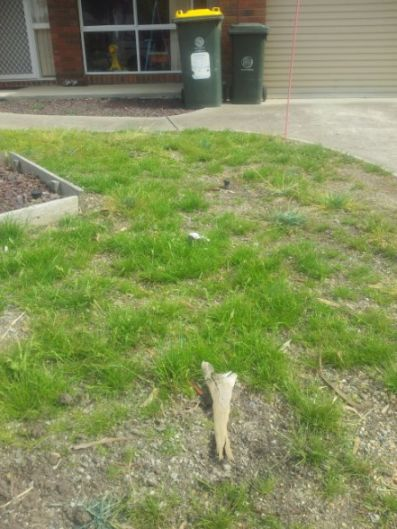
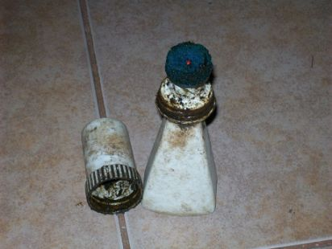

- There are a number of native grass species that are suitable for creating native lawns and, having adapted to Australian climatic and soil conditions over hundreds of thousands of years, native lawns will be far more resilient than conventional exotic lawns.
- Compared to all of the commonly available exotic turf grass species, native grasses have exceptionally deep root systems that enable them to reach moisture deep within the sub-soil that is simply out of the reach of the exotic turf grasses.
- For example the roots of the native grass Bothriochloa macra have been recorded at reaching a depth of 1.2m. The roots of Microlaena stipoides will reach a depth of 30cm or more.
- Indeed the one thing that you notice about native grass tufts is that they are very difficult or impossible to pull out of the soft ground compared to most exotic grass species, that can often be pulled out with minimal effort.
- It is these exceptionally deep root systems that give native grasses their exceptional resistance to water stress and allow them to survive over our sometimes severe droughts.
- The native grass species are 'Griffin' Microlaena stipoides, 'Oxley' Austrodanthonia geniculata & 'Bass' Bothriochloa macra
They are supplied by nativeseeds.com.au
'Griffin' Microlaena stipoides
- C3 or winter grass - can enter a dormant state during particularly hot and dry spells over summer and can die back entirely during prolonged drought.
- Additional watering can bring Microlaena out of dormancy and rejuvenate your lawn.
- Suitable for low lying areas where the sub-soil is likely to be moister on average and in the higher average rainfall areas, e.g. metropolitan Melbourne.
- Best time to sow is April (late autumn) to November (spring). Can be sown later than September however you will have to be prepared to water regularly to maintain high moisture levels in the seed bed.
- The flowers and seed heads of Microlaena are rather inconspicuous an unmowed Microlaena lawn will not look that much different from a mowed one.
- During drought Microlaena will die back and enter dormancy but quickly regenerates once moisture levels improve.
- The following photo is of a tuft of 'Griffin' Microlaena regenerating after summer rainfall during the decade long drought around 2000.
'Bass'Bothriochloa macra

- C4 or summer grass - enters dormancy overwinter and remains active during drought.
- Suitable for much drier areas such as on hills and in the lower average rainfall areas, e.g. Sunbury and Melton.
- Best time to sow is in September (early spring). Again it can be sown later than September however you will have to be prepared to water regularly to maintain high moisture levels in the seed bed.
- The flowers and seed heads of Bothriochloa macra are very prominent and, in fact, it is often used as an ornamental grass for this reason.
- So an unmowed Bothriochloa lawn will look a little like a bush paddock until you mow it again.
- However, if you want free Bothriochloa seed to sow else where, you will have to put up with this.
'Oxley' Austrodanthonia geniculata

- C3 or winter grass - can enter a dormant state during particularly hot and dry spells over summer and can die back entirely during prolonged drought.
- Additional watering can bring Austrodanthonia out of dormancy and rejuvenate your lawn.
- Suitable for low lying areas where the sub-soil is likely to be moister on average and in the higher average rainfall areas, e.g. metropolitan Melbourne.
- Best time to sow is April (late autumn) to November (spring). Can be sown later than September however you will have to be prepared to water regularly to maintain high moisture levels in the seed bed.
- The flowers of Austrodanthonia are rather inconspicuous while the fluffy seed heads are a little more noticeable than those of Microlaena tufts, however an unmowed Austrodanthonia lawn will not look untidy.
Care of native lawns
- Once they are well established, native lawns require very little ongoing maintenance, other than occasional mowing. In fact in some cases you do not necessarily have to mow them at all.
- They will rarely require fertilizing as the native grasses are adapted to the relatively low nutrient levels in Australian soils.
- Other than during prolonged droughts, native lawns will require little or no watering and will obtain all the water they need from natural rainfall.
- During prolonged droughts, native grasses often enter a state of dormancy and can die back to their roots until conditions improve. The following is a photograph of a Microlaena stipoides plant re-generating in my backyard near the end of the decade long drought around 2000:
Establishment of Native Lawns
- Native lawns are sown from seed in the same way as conventional exotic turfs, however they are much slower to establish. PATIENCE & PERSEVERANCE is required.
- The main difference is that native grass seeds take longer to germinate than many exotic grass seeds, and the seedlings are fairly slow growing at first.
- This makes freshly sown native lawns very prone to being swamped by much faster growing weeds.
- Native grass seeds will not germinate unless subjected to a period of sustained moisture in the soil, generally from late April to December.
- This is a specific adaptation to unreliable rainfall over much of the Australian continent.
- The delay in germination ensures that the seeds do not germinate after short lived rainfall, after which the soil dries out again killing any small germinates.
- You may have noticed that this can be a problem with, for example, Tall Fescue lawns.
- The seeds are quick to germinate but can just as quickly die if you forget to water them for a day or two over summer.
- In contrast young native grass seedlings are far more likely to hang on until you remember to water them again.
- After germination growth is slow for the 12 months or so.
- During this period the grass plants are establishing their extensive root systems that will then be capable of sustaining large amounts of foliage.
Weed Control
- Weed control is critical during establishment of a native lawn.
-
As you can see from the photo below, native grasses generally grow slowly for the first 12 months, but
unfortunately most exotic broad leaf weeds and weedy grasses grow very rapidly.
You can see in this photo of a recently sown 'Oxley' Austrodanthonia lawn that the small fine leaf Austrodanthonia seedlings are being swamped by the assorted weeds that grow much faster. - If left unchecked they will quickly swamp the young native grass seedlings, ultimately leading to a very patchy and unsightly lawn.
- You can see in this photo of a different section of the same lawn that the many of the Austrodanthonia
seedlings in this part of the lawn are stunted due to the thicker growth of weedy grasses here (since mowed
and spot sprayed).
- However if the weeds are kept under control long enough for the native grasses to become well established, then your native lawn will become quite resistant to further weed invasion.
- Fortunately their are some easy techniques for keeping the weeds under control.
- And you can see in this photo of the same lawn with some weed control applied to it that the Austrodanthonia
seedlings are now more apparent and the lawn in this section is coming along particularly nicely:
 - And as long as you are PATIENT and persistent with weed control for 12 months or so, this is what you will
end up with:
- Once you get this stage your lawn will require little or no ongoing watering, little ongoing weed control, no fertilising and you don't even necessarily have to mow it.
Terminology
- All plants are divided into to the two very broad groups, monocotyledons and dicotyledons.
- Among the differences between them are the fact that:
- Dicotyledons have highly variable shaped leaves with branching veins.
- Monocotyledons have simple strappy leaves with parallel veins.
- Dicotyledons are further divided into a further two very broad groups:
- Herbaceous plants or herbs: those that produce no woody tissue - many common weedy monocotyledons are also referred to as herbs because they similarly do not produce woody tissue.
- Woody weeds: essentially trees and shrubs that all produce woody stems.
Sprayers
Always use proper chemical handling precuations when using herbicides, inlcuding gloves, long sleeve shirts or jumpers, long pants and waterproof boots of some sort. Beware of hervicide mixes or concentrates spalshing in your eyes and never spray with the wind blowing into your face or onto your back - in both cases you will wind of wearing the herbicide. If you get it o your skin or face then wash it off with soapy water asap.
Cheap & Nasty
- This type of sprayer is cheap and available at most hardware stores
- However they are a nuisance if you are trying to spray over a large area because you continually have to take them off to re-pressurise them.
- The wand is not very robust and is unlikely to last long.
- You can't get spare parts if anything breaks.
Ryobi
- These are brilliant and require little effort to operate.
- If you have any Ryobi power tools then you can simply plug your existing battery pack into the slot behind the panel at the back - it lasts for hours of spraying.
- Consequently you can get through large areas very quickly.
- The wand is fibreglass and plastic so you need to be careful with it.
- The spray tip is fully adjustable from a narrow stream to a wide mist.
Broadleaf Weeds
- Broadleaf weeds include herbaceous dicotyledons.
- Here are examples of a typical broadleaf weeds that you encounter in your garden:
Recommended Herbicide Product
- The herbicides MCPA and dicamba are ideal for selective control of broadleaf weeds in native lawns.
- You should look for these specific herbicides in the "ACTIVE CONSTITUENTS" of any products you purchase.
- Fortunately a there is a readily available product that contains these two herbicides:
- I would recommend 100ml of this concentrate for every 10L of water, or 10ml of concentrate for every 1L or water.
- You also need a small amount of detergent in the mixture to ensure that mixture does not form beads on the surface of the weed leaves, as this will reduce the effectiveness of the herbicide and may not kill the weeds.
- About 30ml of ordinary liquid dishwashing detergent, for every 10L or water, will do the trick.
- You can also add a small amount of blue food colouring to the mix so you can tell where you have sprayed.
- You can simply overspray the whole lawn and the native grass seedlings will not be effected.
- There are also herbicide products that contain the active ingredient triclopyr such as:
- I would recommend 20ml of this concentrate for every 10L of water, or 2ml of concentrate for every 1L or water.
- You also need a small amount of detergent in the mixture to ensure that mixture does not form beads on the surface of the weed leaves, as this will reduce the effectiveness of the herbicide and may not kill the weeds.
- About 30ml of ordinary liquid dishwashing detergent, for every 10L or water, will do the trick.
- You can also add a small amount of blue food colouring to the mix so you can tell where you have sprayed.
- It is generally used to kill woody weeds such as blackberry and Boxthorn however it can also be used to kill broadleaf weeds.
- In general it is selective for broadleaf weeds and does not harm grasses.
- However there is one very notable exception to this rule, and that exception is the native grass Microlaena stipoides.
- Do not use any herbicide products that contain the active ingredient triclopyr on Microlaena lawns.


Weedy Grasses
- Grasses are also herbaceous monocotyledons.
- Examples that you will be familar with include:
- Weedy grasses are rather more difficult to deal with in a native lawn because any herbicide that kills weedy grasses will also kill or damage your native grass.
- The options available are:
- The herbicide glyphosate is the most effective and readily available herbicide for the control of weedy grasses in particular, but a wide range of other weeds as well.
- It is a non-selective herbicide and will kill your native grasses just as effectively as the weeds, so be careful with it.
- Here is the most recognizable herbicide product that contain glyphosate as it active constituent:
- Roundup concentrate:
- This must be diluted before use and the typical dilutions are:
- General use: 100ml concentrate per 10L of water OR 10ml concentrate per 1L of water
- Tough weeds: 200ml concentrate per 10L of water OR 20ml concentrate per 1L of water
- It is also advisable to add 30ml of liquid diswashing detergent to the mix.
- And a small amount of blue food colouring if you wish.
- Roundup ready to use:
- This can be sprayed as is.
- If you are practiced at the use of the spray packs above then it is possible to carefully spot spray weedy grasses in a native lawn, with glyphosate, while doing little or no damage to the native grasses.
- However that generally takes a couple years practice to be able to do a really good job of it and is a matter of:
- Adjusting down the angle of the spray cone with the screw adjustment at the end of the wand.
- Holding the end of the wand close to the ground to further reduce the size of the spray cone.
- Carefully controlling the flow rate if herbicide from the wand via the trigger on the handle - this is the most tricky part to get the hang of.
- Angling the spray cone away from the surrounding native grasses - this is also tricky to get the hang of.
- This technique is particularly useful for annual, biannual and perennial grasses.
- But, if the weeds are particularly over grown, then mow first and wait for a small amount of new foliage to sprout.
- By doing this you will make it easier to avoid off target glyphosate damage.
- For dabbing and painting I recommend you use neat glyphosate concentrate.
- Shoe polish dabber bottles are ideal for this:
- Otherwise a small paint brush will suffice.
- With this technique you simply dab the herbicide on as much of the plant as possible without also getting it on nearby native grasses.
- The concentrated glyphosate will compensate for the fact that you are not able to cover all the foliage of the weedy grass.
- This technique is particularly useful for annual, biannual and perennial grasses.
- This technique is particularly useful for larger broadleaf weeds that have a well defined main stem, e.g. the blue flowered mallow, or any shrubs and trees.,
- Just use a pair of secateurs to cut the main stem as close to ground level as possible and then, within seconds, dab the stump with neat glyphosate.
- This technique of applying herbicde is very effective, and you can use glyphosate on weeds like blue flowered mallow that are normally resistant to glyphosate when applied to their foliage.
- There is no need to dig out large tap roots.
- This technique can be used as a last resort on well established native lawns, as in the photos below.
- By reducing the concentration of glyphosate in the mix you reduce the effectiveness of the glyphosate on perennial grasses (both native and weedy) while still maintaining its effectiveness on many annual weedy grasses.
- Your native grasses will be burned back however they will recover in time while the weedy annual grasses will be killed outright.
- With this technique you 10ml of glyphosate concentrate in 10L of water, or 1ml of glyphosate concentrate in 1L or water, plus 30ml of dishwashing liquid as before.
- This technique is particularly useful for wiping out winter grass without doing any long term harm to the native grasses.
- But always try and minimise off target spraying of the surrounding native grass as much as possible.
- The best time to do it is when the cold days when most native grasses are the least active while Poa annua is highly active.
- Do not try this on a recently sown native lawn as there is a risk that the young native grass seedlings will be killed out right.
- Simply mowing your establishing native lawn is also effective, particularly for annual and biannual weeds.
- These are weeds that grow, flower, set seed and then die within a year or two years.
- By mowing, you prevent them from dropping seeds into the soil and replacing themselves a 1000s of times over in the following season and years.
- Then they will die of their own accord without the need to use herbicides on them.
- Or you can just wait a bit for a small amount of new foliage to grow and then spot spray or dab them with herbicide, thus making it easier to avoid off target herbicide damage.
Recommended Herbicide Product

Spot Spraying
Painting & Dabbing

Cut & Paint
Dilute Glyphosate
Mowing
Hand weeding
If the area of native lawn is small and the infestation of weedy grasses is not to thick then this is probably the best option as you will do little or no damage to surrounding native grasses.


{kind=link}
{kind=link}
{kind=link}
{kind=link}
{kind=link}
{kind=link}
{kind=link}
{kind=link}
{kind=link}
{kind=link}
{kind=link}
{kind=link}
{kind=link}
{kind=link}
{kind=link}